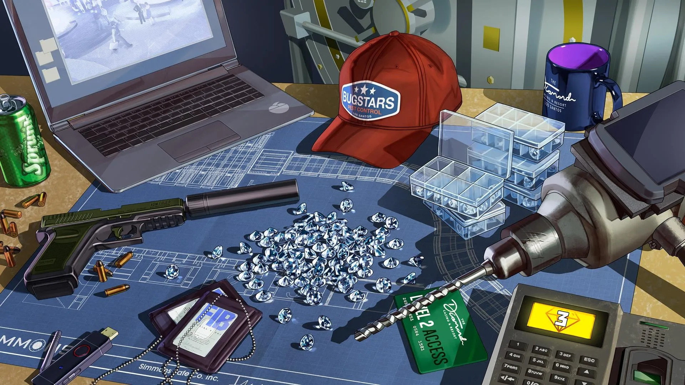
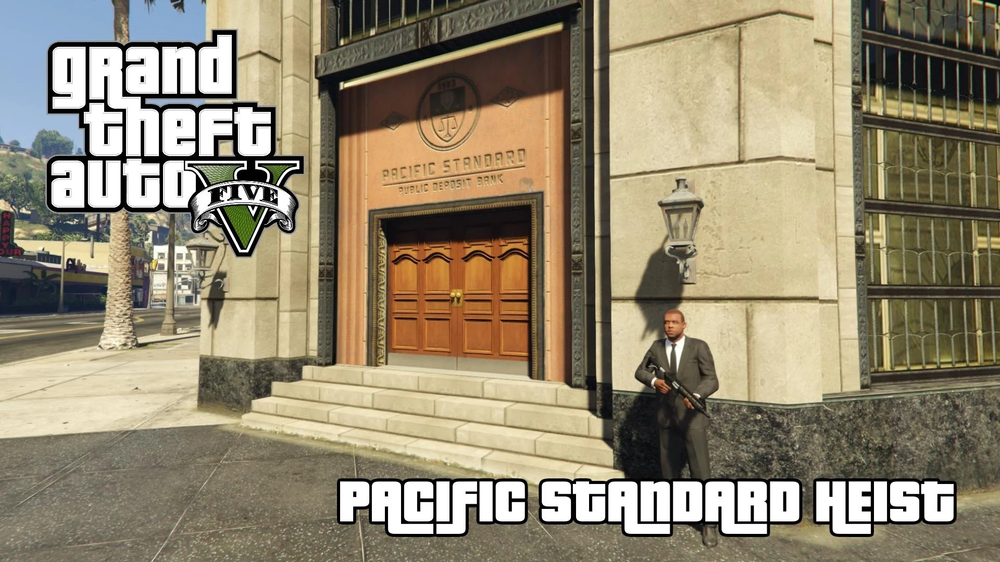
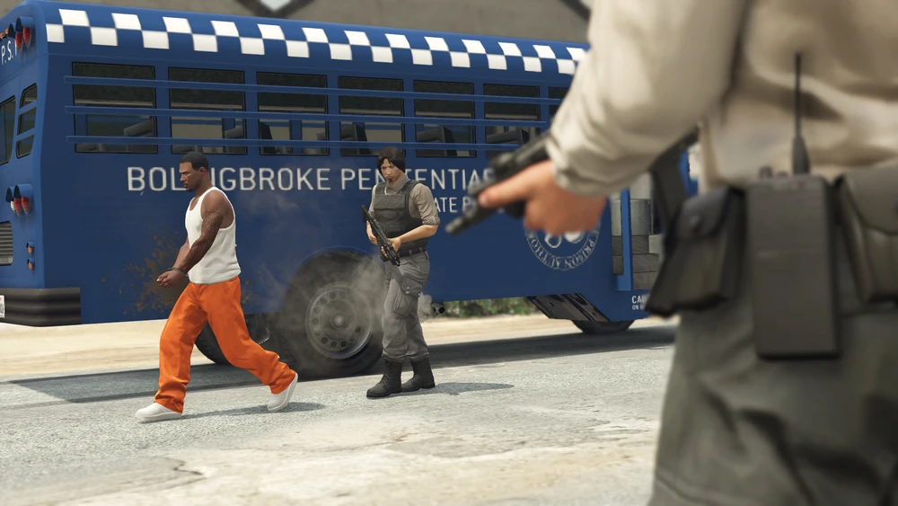
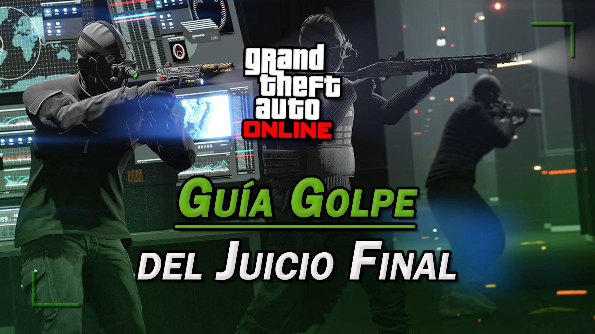
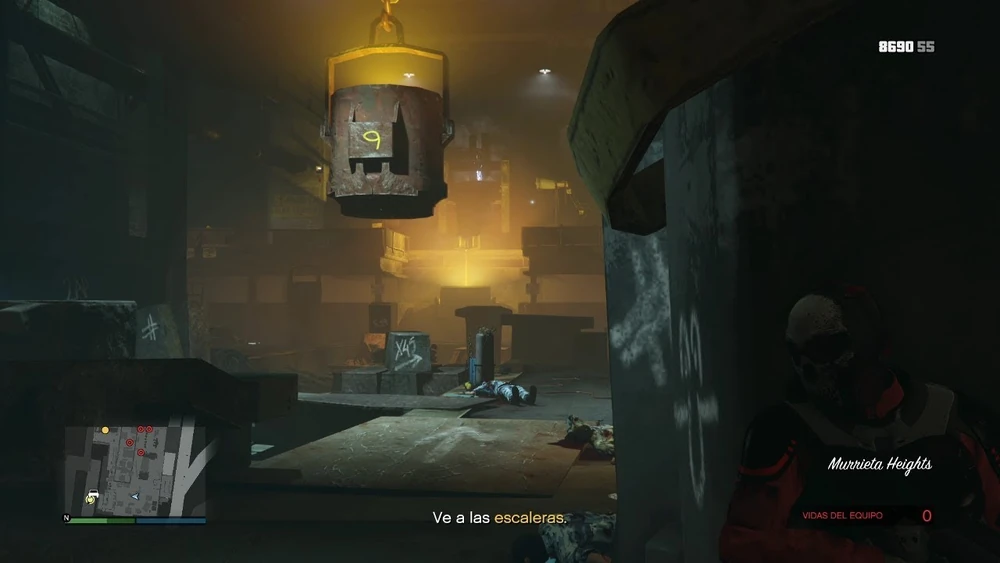
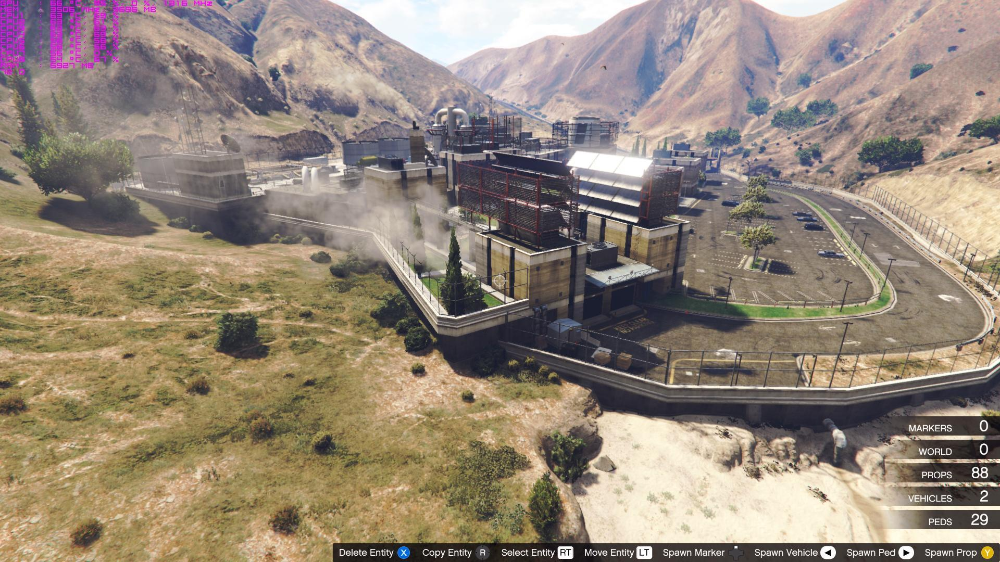

Cayo Perico es considerada una de las islas privadas más seguras del mundo y la ubicación del remoto complejo insular del narcotraficante más notorio del mundo, Juan Strickler (también conocido como El Rubio). También contiene una fortuna incalculable en arte, oro y dinero del narcotráfico, esparcido por toda la isla. Cayo Perico no es sólo el centro neurálgico del imperio de la droga de El Rubio, sino que también es anfitrión de su otro gran amor: las maratónicas fiestas de baile en la playa, donde todos, desde jetsetters y herederas hasta legendarios productores musicales, se reúnen para bailar hasta que sale el sol. La isla apareció por primera vez en el avance de "El Rubio Dossier" publicado durante la actualización especial de verano de Los Santos , que contenía vistas de tres lugares de la isla, incluida una extensa finca de estilo español en lo alto de un acantilado, una torre de seguridad y una granja.

El atraco al Casino se divide en tres estrategias: La estrategia Silenciosa y Furtiva se centra en atravesar el casino sin alertar a nadie, adoptando una estrategia para evadir o eliminar enemigos para llegar a la bóveda y luego salir del casino evitando al LSPD y al NOOSE TRU . Alertar a los guardias significa que los jugadores tendrán que luchar para llegar a la bóveda; también tendrán menos tiempo dentro antes de que se libere el agente nervioso. La estrategia a la fuerza se centra completamente en luchar a lo largo del casino contra los enemigos para llegar a la bóveda y luego salir del casino luchando contra el LSPD y la NOOSE. La estrategia de Estafa Maestra se centra en que los jugadores usen disfraces para acceder al sótano del Casino para robar el botín y luego, opcionalmente, usen un nuevo disfraz para evadir a los enemigos durante la huida o luchar para salir.
Un Lester Crest muy emocionado regresa para liderar e informar sobre un atraco que finalmente le pareció interesante: robar la sucursal principal del Pacific Standard Bank en el centro de Vinewood . El atraco consta de cinco preparativos y un final. Se puede completar con un total de 4 jugadores.
Lester Crest llama al protagonista de GTA Online después de "El Golpe del Fleeca" para informarle que está trabajando en una posible nueva banda sonora, pero que mientras tanto ha recibido noticias de una oferta de trabajo, de la que apenas le dieron detalles, salvo que se necesitaba equipo. Afirma que personalmente "no lo tocaría ni con un palo" porque no conoce a ninguno de los jugadores, pero pensó que el protagonista podría estar interesado y podría darle su dirección
Un magnate de la tecnología multimillonario, un agente de inteligencia idealista, un teórico de la conspiración socialmente torpe y una supercomputadora neurótica se han visto forzados a una alianza poco probable para salvar a San Andreas de la aniquilación total. A medida que aumentan las amenazas apocalípticas de enemigos desconocidos, usted y su tripulación criminal se alisan para desentrañar misterios y erradicar las amenazas que van desde las bulliciosas calles del centro de Los Santos hasta el fondo del océano y hasta las profundidades de Mount Chiliad en una épica nueva aventura en línea.
Después de recopilar los datos necesarios y los vehículos correspondientes, el equipo está listo para entrar en el submarino y eliminar a Bogdan. El equipo se divide en dos equipos: Equipo de submarino, que utiliza el coche sumergible Stromberg y el equipo de apoyo aéreo, que los ayuda en el avión de rotor inclinable Avenger.
El equipo conformado por 4 jugadores viaja hacia un Valkyrie que está en el muelle norte del Alamo Sea. El piloto y el artillero toman sus posiciones y el equipo de tierra sube con ellos. Viajan hacia un marcador que está por encima de Humane Labs and Research. El equipo terrestre salta en paracaídas hasta el suelo, a la vez que se activa el PEM (Pulso Electromagnético) para dejar sin electricidad a los Laboratorios. Mientras que los dos jugadores atacan el laboratorio con la ayuda de las gafas de visión nocturna, el equipo aéreo permanecerá en el Valkyrie, defendiéndose de los refuerzos de Merryweather que se acercan en Mesas e Insurgents por tierra y en helicópteros Buzzard en el aire.
